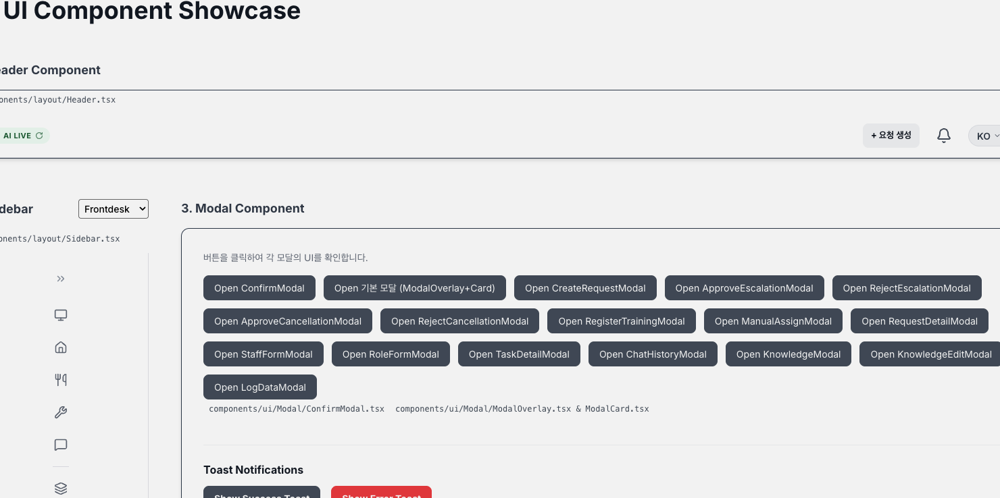

“AI와 사람의 협업으로 완성하는 스마트 호텔 오퍼레이션 플랫폼”
고객들은 객실 내 비품 요구, 룸서비스 주문, 시설물 불만 사항, 단순 정보 검색 등 다양한 난이도의 비정형 요청들을 실시간으로 쏟아냅니다.
실시간 병목
단 한 명의 프론트 직원이 전화벨 소리를 들으면서 수기 메모를 적고, PMS 시스템에서 예약을 조회하며, 부서별 단체 카톡방과 직원 전용 메신저, PC 대시보드를 넘나듭니다.
이러한 극심한 멀티태스킹은 현장 직원의 업무 피로도를 높이고, 대면 고객에 대한 직접적인 서비스 몰입을 방해하는 가장 결정적인 병목입니다.
실제 호텔 업무 흐름 다이어그램 (As-is)
호텔 프론트 업무의 핵심은: 언어 이해 | 요청 분류 | 정보 전달 | 기록 | 문서화
즉, 호텔 프론트데스크 업무의 상당 부분은 대면 커뮤니케이션이 아니라 정보 처리 업무에 가깝습니다.
LLM AI가 가장 뛰어난 능력을 발휘하는 영역인 언어 이해, 요청 자동 분류, 신속한 정보 전달 및 이력 기록을 도맡아 수행합니다.
고객의 카톡·웹 요청 순간부터 AI 분석을 거쳐 현장 직원의 스마트폰 알림까지 최종 배정 단계를 1분 미만으로 극대화하여 완료합니다.
호텔 직원은 기계적인 분류와 전화 인계에서 해방되어, 현장에 찾아오는 고객 응대 및 오프라인 컨시어즈 등 대면 케어에 집중합니다.
체크인(UUID-QR/JWT)부터 컨시어즈 음성 예약, 시설물 사진 분석, 오라우팅 보완, 다국어 번역 및 체크아웃 하드딜리트까지 호텔의 24시간을 담은 시연 영상을 전체화면으로 감상하세요.
모호한 부서별 Prompt 분기문 하드코딩을 제거했습니다. 0.1초 만에 RAG 지식을 통합 검색해 일치 문서를 찾은 뒤, 매핑되어 있는 부서 태그를 역추적해 전달합니다. 지식 추가 시 프롬프트 수정이 일절 불필요합니다.
비싼 대화 히스토리 전체를 LLM 컨텍스트에 싣는 대신, 최근 5개 대화만 컨텍스트 메모리로 유지합니다. 대신 과거의 주문 내역이나 주문 번호는 RDB 및 백엔드 상태 머신에서 "구조화된 카드"로 기록해 영구 추적합니다.
단순 텍스트 매칭의 한계를 극복하기 위해 PGVector와 Neo4j Graph DB를 결합했습니다. 부서 간 통합 지식과 객실-PMS 간의 유기적 관계 데이터를 깊이 있게 추출해 답변 및 라우팅 성공률을 높였습니다.
"수건 2장만 가져다줘"
Vector & Graph RAG 검색
부서: 하우스키핑 | 비품: 수건
해당 부서 자동 Task 배정
비즈니스 코어 로직(Domain/Model)을 순수 POJO로 완전히 격리했습니다. 외부 기술 요소(JPA, Spring Framework, AI API 등)에 의존하지 않도록 의존 방향 규칙을 정립하여 유지보수성을 극대화했습니다.
Next.js API Routes를 백엔드와 클라이언트 간의 BFF(Backend for Frontend) 레이어로 도입했습니다. 민감한 JWT 토큰을 iron-session으로 암호화하여 HttpOnly, Secure 쿠키로 구워 브라우저에는 토큰을 절대 노출하지 않습니다.
Next.js Client (React)
iron-session 복호화 & Proxy
Hexagonal Core (POJO)
JPA Persistence Adapter
모든 UI 요소(인풋, 버튼, 뱃지, 모달 등)를 원자(Atomic) 단위로 컴포넌트화하여 재사용성을 극대화했습니다. 모든 요소가 전역 CSS Variables 토큰을 공유하므로 실시간 테마 변경이 완벽하게 용이합니다.
각 호텔의 고유 브랜드 가치를 보존하기 위해, 실시간으로 채팅 UI 및 대시보드 테마(Grand Luxury Blue, Eco Forest Green 등)를 변경할 수 있는 커스텀 컴포넌트 아키텍처를 제공합니다.

지속 선순환 피드백 루프 (AI Feedback Loop)
직원들이 AI가 자동 배정한 업무 부서를 수동으로 수정하거나 담당자를 정정하는 일련의 자연스러운 보완 행동 자체를 AI 모델 학습용 데이터셋으로 즉시 변환시킵니다.
이력이 축적될수록 파이썬 AI 백서 비정형 매핑의 정확도가 스스로 상승합니다. 이는 오배정률 감소와 호텔 전체의 운영 생산성 극대화로 직결됩니다.
반복 행정 업무의 80%를 AI가 처리함으로써 야간 프론트 응대 인건비 부담을 획기적으로 경감합니다. 또한, 외국인 응대 과정에서 발생하는 오안내와 정정 처리에 필요한 커뮤니케이션 운영 비용을 영(0)으로 수렴시킵니다.
현장에서 발생하는 프론트 직원의 '오배정 수정 이력'을 데이터셋으로 자동 변환합니다. AI가 수정본을 퓨샷(Few-shot)으로 자동 학습하여 라우팅 지능이 운영될수록 고도화됩니다.
어느 객실에서 어떤 소모품(칫솔, 타월)의 소비가 빈번한지 통계를 산출합니다. 이를 기반으로 비품 보충 주기를 사전에 예측하는 호텔 전용 자원 관리 인사이트를 제공합니다.
단순 정보 조회를 넘어 객실 배정 변경, 결제 처리, 조식 인원 추가 등 호텔 PMS 시스템의 실제 데이터 조작 및 액션까지 직접 지시하고 완결 짓는 AI Agent로 진화합니다.
경청해 주셔서 감사합니다.